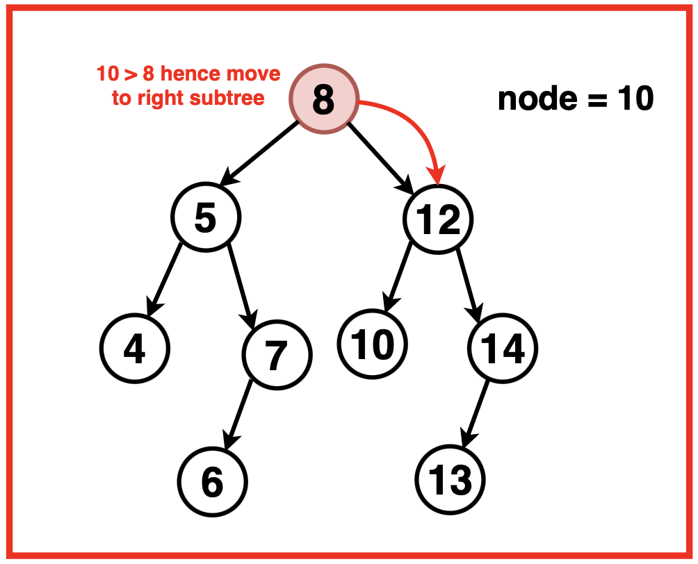
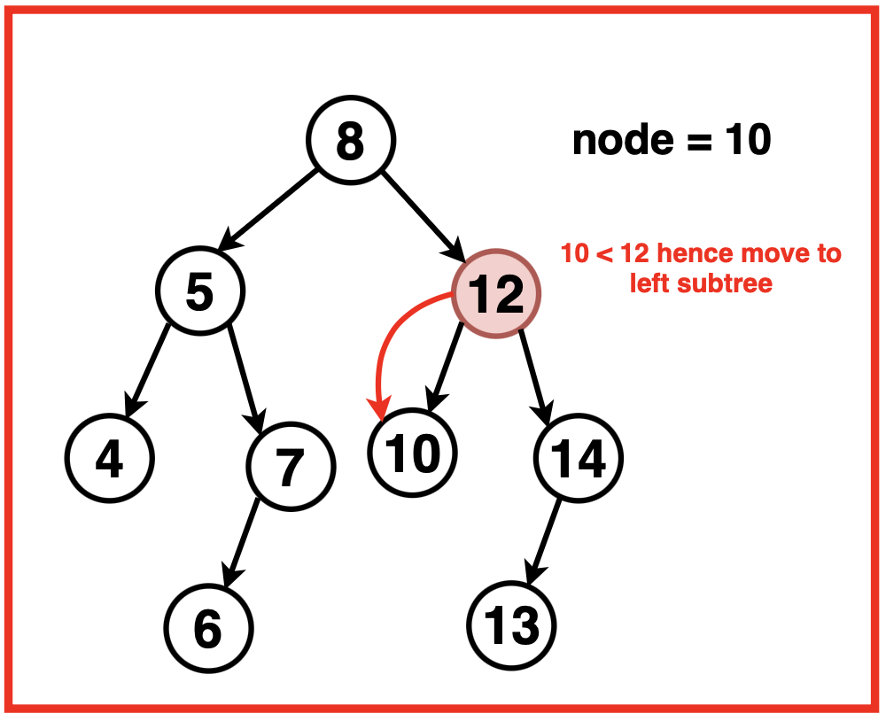
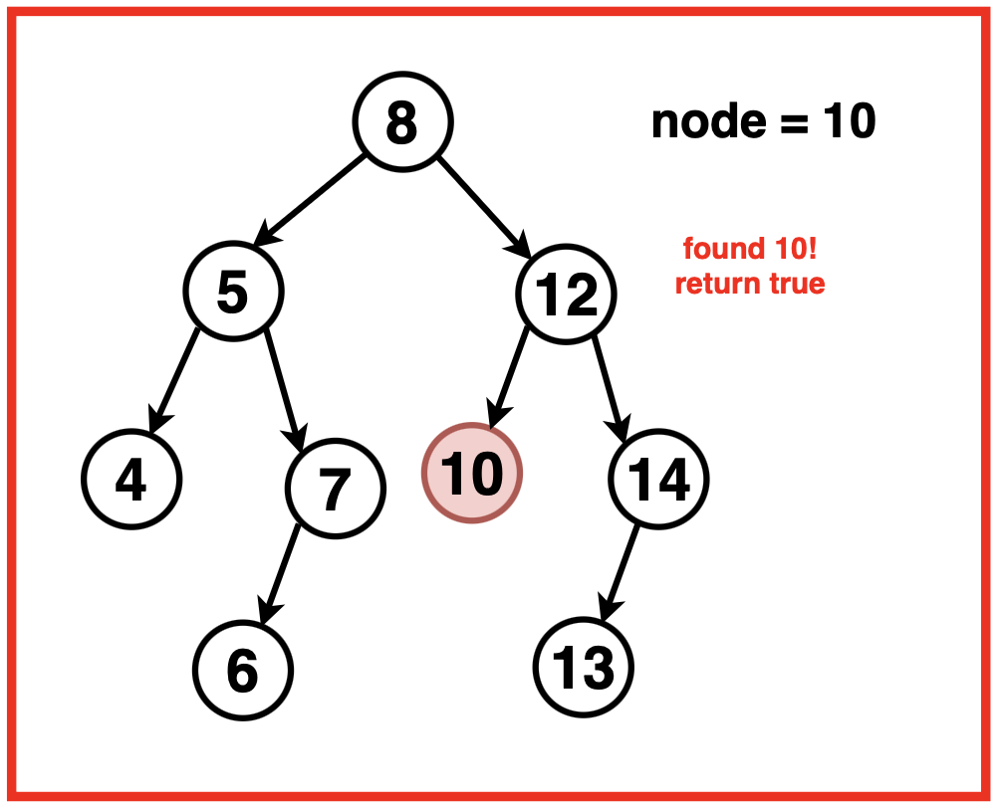

Disclaimer: Don’t jump directly to the solution, try it out
yourself first.
Optimal Approach
Algorithm / Intuition
Starting from the root, continuously compare the key value with the current node’s value, traverse to left or right based on these comparisons.
If the current node's value matches the target value, the algorithm stops and returns that node. Otherwise, it moves down the tree, choosing the left or right child depending on whether the target value is smaller or larger than the current node's value, respectively.
This process continues until either the target value is found within a node or the algorithm reaches a nullptr node, indicating that the value is not present in the BST.
Algorithm:
Step 1:Start at the root of the Binary Search Tree.

Step 2: While the current node is not null and the current node’s value is not equal to the key recursively travel the tree by:
If the target value is less than the current node’s value, move to the left child as smaller values are on the left subtree in the BST.
If the target value is greater than the current node’s value, move to the right child as larger values are on the right subtree in the BST.

Step 3:
Return the current node if it contains the target value, or NULL if the value is not found in the BST.

Code
#include <iostream>
#include <vector>
#include <climits>
using namespace std;
// Definition of TreeNode structure
// for a binary tree node
struct TreeNode {
// Value of the node
int val;
// Pointer to the left child node
TreeNode* left;
// Pointer to the right child node
TreeNode* right;
// Constructor to initialize the node with a
// value and set left and right pointers to null
TreeNode(int x) : val(x), left(nullptr), right(nullptr) {}
};
class Solution {
public:
// This function searches for a node with
// a specified value in a Binary Search Tree (BST).
TreeNode* searchBST(TreeNode* root, int val){
// Loop until either the tree is
// exhausted (NULL) or the value is found.
while(root != NULL && root->val != val){
// Check if the target value is
// less than the current node's value.
// If so, move to the left subtree
// (values smaller than the current node).
// Otherwise, move to the right subtree
// (values larger than the current node).
root = val < root->val ? root->left : root->right;
}
// Return the node containing the target value,
// if found; otherwise, return NULL.
return root;
}
};
// Function to perform an in-order traversal
// of a binary tree and print its nodes
void printInOrder(TreeNode* root) {
// Check if the current node
// is null (base case for recursion)
if (root == nullptr) {
// If null, return and
// terminate the function
return;
}
// Recursively call printInOrder
// for the left subtree
printInOrder(root->left);
// Print the value of the current node
cout << root->val << " ";
// Recursively call printInOrder
// for the right subtree
printInOrder(root->right);
}
int main() {
// Creating a BST
TreeNode* root = new TreeNode(5);
root->left = new TreeNode(3);
root->right = new TreeNode(8);
root->left->left = new TreeNode(2);
root->left->right = new TreeNode(4);
root->right->left = new TreeNode(6);
root->right->right = new TreeNode(10);
cout << "Binary Search Tree: "<< endl;
printInOrder(root);
cout << endl;
Solution solution;
// Searching for a value in the BST
int target = 6;
TreeNode* result = solution.searchBST(root, target);
// Displaying the search result
if (result != nullptr) {
std::cout << "Value " << target << " found in the BST!" << std::endl;
} else {
std::cout << "Value " << target << " not found in the BST." << std::endl;
}
return 0;
}
// Importing required libraries
import java.util.*;
// Definition of TreeNode structure
// for a binary tree node
class TreeNode {
// Value of the node
int val;
// Pointer to the left child node
TreeNode left;
// Pointer to the right child node
TreeNode right;
// Constructor to initialize the node with a
// value and set left and right pointers to null
TreeNode(int x) {
val = x;
left = null;
right = null;
}
}
class Solution {
// This function searches for a node with
// a specified value in a Binary Search Tree (BST).
public TreeNode searchBST(TreeNode root, int val) {
// Loop until either the tree is
// exhausted (null) or the value is found.
while (root != null && root.val != val) {
// Check if the target value is
// less than the current node's value.
// If so, move to the left subtree
// (values smaller than the current node).
// Otherwise, move to the right subtree
// (values larger than the current node).
root = val < root.val ? root.left : root.right;
}
// Return the node containing the target value,
// if found; otherwise, return null.
return root;
}
}
public class Main {
// Function to perform an in-order traversal
// of a binary tree and print its nodes
public static void printInOrder(TreeNode root) {
// Check if the current node
// is null (base case for recursion)
if (root == null) {
// If null, return and
// terminate the function
return;
}
// Recursively call printInOrder
// for the left subtree
printInOrder(root.left);
// Print the value of the current node
System.out.print(root.val + " ");
// Recursively call printInOrder
// for the right subtree
printInOrder(root.right);
}
public static void main(String[] args) {
// Creating a BST
TreeNode root = new TreeNode(5);
root.left = new TreeNode(3);
root.right = new TreeNode(8);
root.left.left = new TreeNode(2);
root.left.right = new TreeNode(4);
root.right.left = new TreeNode(6);
root.right.right = new TreeNode(10);
System.out.println("Binary Search Tree: ");
printInOrder(root);
System.out.println();
Solution solution = new Solution();
// Searching for a value in the BST
int target = 6;
TreeNode result = solution.searchBST(root, target);
// Displaying the search result
if (result != null) {
System.out.println("Value " + target + " found in the BST!");
} else {
System.out.println("Value " + target + " not found in the BST.");
}
}
}
# Definition of TreeNode structure
# for a binary tree node
class TreeNode:
# Constructor to initialize the node with a
# value and set left and right pointers to None
def __init__(self, x):
self.val = x
self.left = None
self.right = None
class Solution:
# This function searches for a node with
# a specified value in a Binary Search Tree (BST).
def searchBST(self, root, val):
# Loop until either the tree is
# exhausted (None) or the value is found.
while root is not None and root.val != val:
# Check if the target value is
# less than the current node's value.
# If so, move to the left subtree
# (values smaller than the current node).
# Otherwise, move to the right subtree
# (values larger than the current node).
root = root.left if val < root.val else root.right
# Return the node containing the target value,
# if found; otherwise, return None.
return root
# Function to perform an in-order traversal
# of a binary tree and print its nodes
def printInOrder(root):
# Check if the current node
# is None (base case for recursion)
if root is None:
# If None, return and
# terminate the function
return
# Recursively call printInOrder
# for the left subtree
printInOrder(root.left)
# Print the value of the current node
print(root.val, end=" ")
# Recursively call printInOrder
# for the right subtree
printInOrder(root.right)
# Creating a BST
root = TreeNode(5)
root.left = TreeNode(3)
root.right = TreeNode(8)
root.left.left = TreeNode(2)
root.left.right = TreeNode(4)
root.right.left = TreeNode(6)
root.right.right = TreeNode(10)
print("Binary Search Tree:")
printInOrder(root)
print()
solution = Solution()
# Searching for a value in the BST
target = 6
result = solution.searchBST(root, target)
# Displaying the search result
if result is not None:
print(f"Value {target} found in the BST!")
else:
print(f"Value {target} not found in the BST.")
// Definition of TreeNode structure
// for a binary tree node
class TreeNode {
// Value of the node
constructor(val) {
this.val = val;
// Pointer to the left child node
this.left = null;
// Pointer to the right child node
this.right = null;
}
}
class Solution {
// This function searches for a node with a
// specified value in a Binary Search Tree (BST).
searchBST(root, val) {
// Loop until either the tree is
// exhausted (null) or the value is found.
while (root !== null && root.val !== val) {
// Check if the target value is less
// than the current node's value.
// If so, move to the left subtree
// (values smaller than the current node).
// Otherwise, move to the right subtree
// (values larger than the current node).
root = val < root.val ? root.left : root.right;
}
// Return the node containing the target value,
// if found; otherwise, return null.
return root;
}
}
// Function to perform an in-order traversal
// of a binary tree and print its nodes
function printInOrder(root) {
// Check if the current node is
// null (base case for recursion)
if (root === null) {
// If null, return
// and terminate the function
return;
}
// Recursively call printInOrder
// for the left subtree
printInOrder(root.left);
// Print the value of the current node
console.log(root.val);
// Recursively call printInOrder
// for the right subtree
printInOrder(root.right);
}
// Creating a BST
let root = new TreeNode(5);
root.left = new TreeNode(3);
root.right = new TreeNode(8);
root.left.left = new TreeNode(2);
root.left.right = new TreeNode(4);
root.right.left = new TreeNode(6);
root.right.right = new TreeNode(10);
console.log("Binary Search Tree: ");
printInOrder(root);
let solution = new Solution();
// Searching for a value in the BST
let target = 6;
let result = solution.searchBST(root, target);
// Displaying the search result
if (result !== null) {
console.log(`Value ${target} found in the BST!`);
} else {
console.log(`Value ${target} not found in the BST.`);
}
Output
Binary Search Tree: 2 3 4 5 6 8 10, Value 6 found in the BST!
Complexity Analysis
Time Complexity: O(log2N)
where N is the number of nodes in the Binary Search Tree. In the best case scenario, where the tree is balanced, the time complexity is the height of the tree ie. log2N.
In the worst-case scenario, where the tree is degenerate (linear), the time complexity becomes O(n), as it would require traversing all nodes along the path from the root to the leaf.
Space Complexity: O(1)
since the algorithm does not use any additional space or data structures. The algorithm does use auxiliary stack space from recursion.
In the average and worst-case scenarios, the space complexity for recursive stack space is O(h), where 'h' represents the height of the tree.
Video Explanation
Special thanks to Gauri Tomar for contributing to this article on takeUforward. If you also wish to share your knowledge with the takeUforward fam, please check out this article